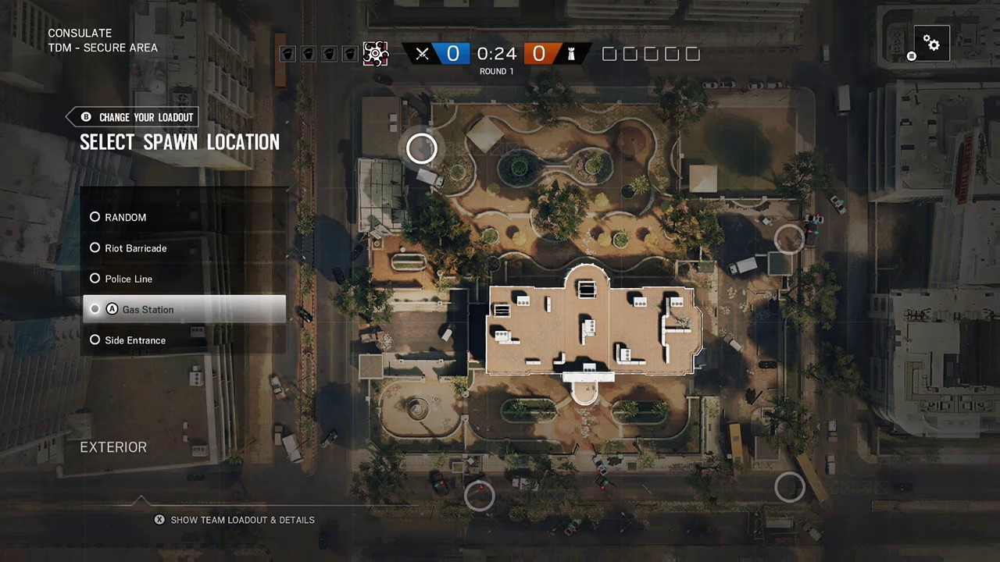
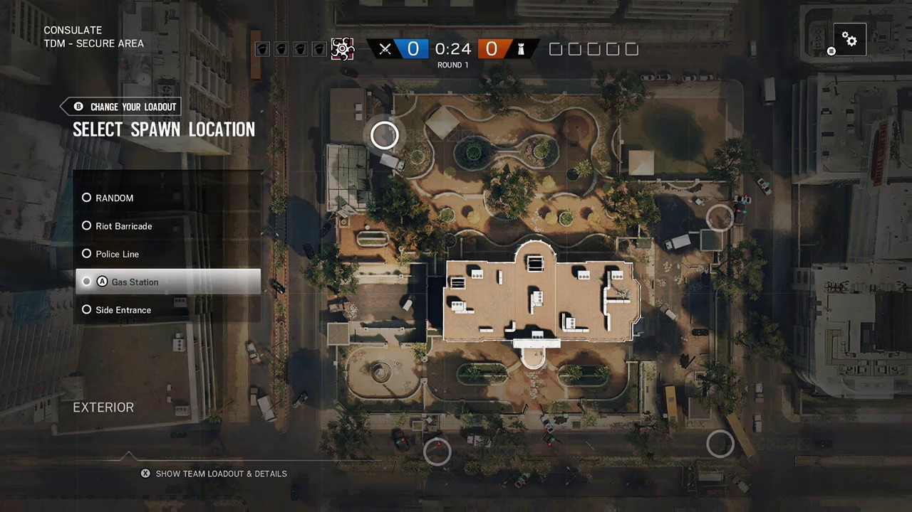

Como os outros títulos da série, foca-se sobretudo no trabalho em equipe e realismo. No entanto, têm algumas diferenças para os outros jogos, baseando-se fortemente na cooperação entre os jogadores e na destruição de ambientes fechados. No entanto, Siege não tem nenhuma apenas os cenários campanha, apesar de oferecer o modo Cenários, onde o jogador pode aprender a utilizar os operadores, e oferece também o modo online.
 
